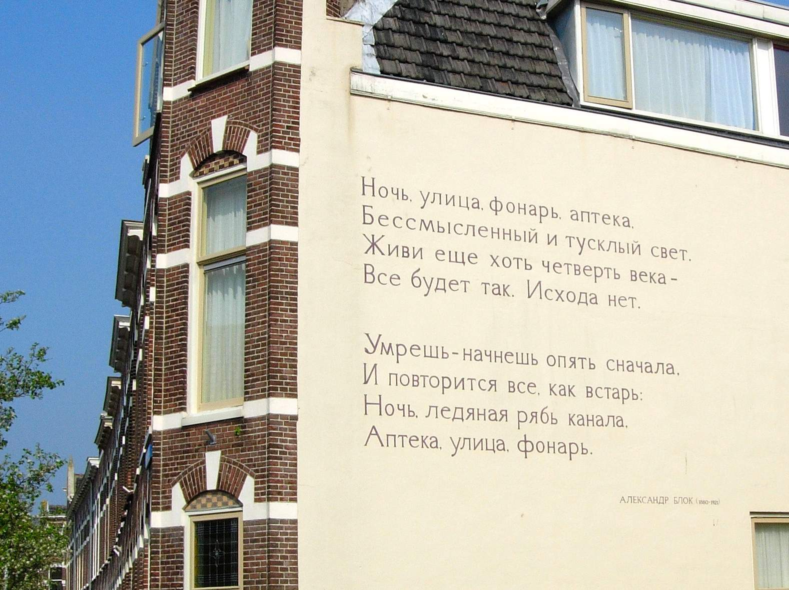

Click the title to visit that section.
♦ History
♦ Elements
♦ Forms

Poetry (the term derives from a variant of the Greek term, poiesis, "making") is a form of literature that uses aesthetic and rhythmic qualities of language—such as phonaesthetics, sound symbolism, and metre—to evoke meanings in addition to, or in place of, the prosaic ostensible meaning.
Poetry has a long history, dating back to the Sumerian Epic of Gilgamesh. Early poems evolved from folk songs such as the Chinese Shijing, or from a need to retell oral epics, as with the Sanskrit Vedas, Zoroastrian Gathas, and the Homeric epics, the Iliad and the Odyssey. Ancient attempts to define poetry, such as Aristotle's Poetics, focused on the uses of speech in rhetoric, drama, song and comedy. Later attempts concentrated on features such as repetition, verse form and rhyme, and emphasized the aesthetics which distinguish poetry from more objectively informative, prosaic forms of writing.